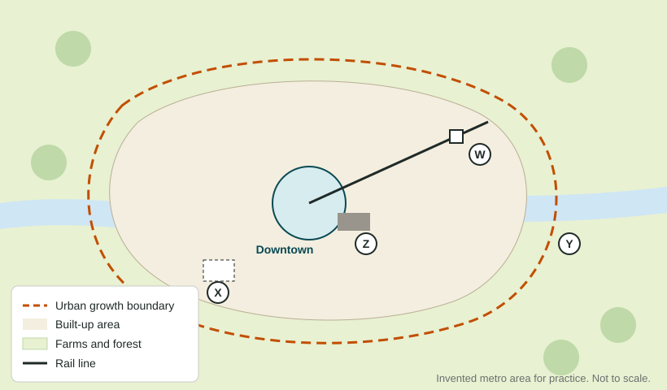

Challenges of Urban Sustainability
Growing cities face sprawl, poor sanitation, air and water pollution, high energy use and climate risks such as heat and flooding.
Part 1 · Hook
Why this matters
Part 2 · Before you start
What this builds on
Part 3 · Prerequisite check
Quick check before you start
1. What is sustainability?
- Meeting people's needs without using up what future generations will need
- Growing a city as fast as possible
- Keeping a city's population the same forever
- Building only on farmland
Show the answer
Sustainability balances present needs with the needs of the future.
- Correct: Meeting people's needs without using up what future generations will need:
- Growing a city as fast as possible:
- Keeping a city's population the same forever:
- Building only on farmland:
2. What is an urban growth boundary?
- A line beyond which building is limited
- A city's tax border
- A ring highway
- The edge of a floodplain
Show the answer
It steers building inside the line and protects rural land outside it.
- Correct: A line beyond which building is limited:
- A city's tax border:
- A ring highway:
- The edge of a floodplain:
3. What is infilling?
- Building on vacant or underused lots inside the built-up area
- Building new suburbs on farmland
- Draining a lake for farmland
- Clearing a neighborhood for a highway
Show the answer
Infill reuses land already inside the city.
- Correct: Building on vacant or underused lots inside the built-up area:
- Building new suburbs on farmland:
- Draining a lake for farmland:
- Clearing a neighborhood for a highway:
Part 4 · See it
See it first

Part 5 · Step by step
How it works, step by step
- A city spreads over farmland at low densitypeople drive farther, so fuel use, air pollution and greenhouse gases rise
- Paved surfaces replace fields and forestrain runs off fast, carrying oil and trash into rivers and raising flood risk
- Growth outpaces sewers and water pipesuntreated waste reaches water supplies, harming health
- Cities clean up brownfields, protect farmland and plan across the whole regiongrowth goes onto land already in use, and the city's footprint on the land grows more slowly
Part 6 · Key ideas
Key ideas
- Urban sustainability challenges include sprawl, sanitation, climate change, air and water quality, and energy use.
- A city's ecological footprint is the area of land and water needed to supply what its people use and to absorb their waste. Cities' footprints are far larger than their own area.
- A brownfield is an abandoned or underused industrial or commercial site that may be polluted. Cleaning it up lets the city grow inward instead of outward.
- Responses include regional planning across many local governments, brownfield cleanup, urban growth boundaries and farmland protection. Each has costs as well as benefits.
Part 7 · Misconception
A common mistake
The wrong idea: A city's environmental impact stops at its city limits.
What actually happens: A city draws food, water, energy and materials from far away and sends its waste and emissions far away too. That is why its ecological footprint covers an area many times larger than the city itself.
Part 8 · Check yourself
Check yourself
Exam-style questions. Anything you miss goes into your review queue.
Image
An invented metro area with an urban growth boundary
1. Which letter marks a likely brownfield?
- W
- Z
- X
- Y
Show the answer
Z is an old factory site on the river: abandoned industrial land that may be polluted, the definition of a brownfield.
- W: W is a rail station in use.
- Correct: Z: Right: an old factory site is a brownfield.
- X: X is an empty lot, with no sign of past industry.
- Y: Y is farmland outside the boundary.
2. The city wants 2,000 new homes without paving more farmland. Which pair of sites on the drawing should it build on?
- X and Z
- Y and Z
- X and Y
- W and Y
Show the answer
X (an empty lot) and Z (a brownfield) are both inside the boundary on land already in the built-up area. Y is farmland outside it.
- Correct: X and Z: Right: infill and brownfield reuse protect farmland.
- Y and Z: Y is farmland outside the boundary.
- X and Y: Y is farmland outside the boundary.
- W and Y: Y is farmland outside the boundary.
3. Why might building new apartments near W reduce car trips?
- W is outside the boundary, among the farms
- Land near W is a polluted old factory site
- Rail stations add a great deal of parking space
- Residents could ride the train
Show the answer
W is a rail station. Homes within walking distance of it let people ride to downtown instead of driving: transit-oriented development.
- W is outside the boundary, among the farms: W is inside the boundary, in the built-up area.
- Land near W is a polluted old factory site: The factory site is Z, not W.
- Rail stations add a great deal of parking space: Stations do not add parking; they offer an alternative to driving.
- Correct: Residents could ride the train: Right: transit nearby replaces some car trips.
4. Which is a likely cost of the boundary shown in the drawing?
- Farmland outside it is paved faster
- Car trips get longer for most residents
- Land prices may rise inside the line
- Brownfields inside it are harder to reuse
Show the answer
Limiting where building can happen makes land inside the line scarcer, which can push up land and home prices.
- Farmland outside it is paved faster: The boundary is meant to slow paving outside it.
- Car trips get longer for most residents: Compact growth usually shortens trips.
- Correct: Land prices may rise inside the line: Right: scarcer land can cost more.
- Brownfields inside it are harder to reuse: Brownfields inside the boundary are prime sites for reuse.
5. Which is a brownfield?
- A field of wheat just outside the city limits
- A new park on a green hillside above the river
- A closed, leaking gas station
- A quiet neighborhood of single-family homes
Show the answer
A brownfield is an abandoned or underused industrial or commercial site that may be polluted, such as an old gas station.
- A field of wheat just outside the city limits: A wheat field is farmland, not a brownfield.
- A new park on a green hillside above the river: A new park is in active use.
- Correct: A closed, leaking gas station: Right: abandoned and possibly polluted.
- A quiet neighborhood of single-family homes: A neighborhood of homes is not an abandoned commercial site.
6. A city of 1 million people needs farmland, forests and oceans many times its own area to supply its food, energy and materials and absorb its waste. What does this describe?
- Its carrying capacity
- Its ecological footprint
- Its residential density
- Its range
Show the answer
The ecological footprint is the land and water area needed to supply a population and absorb its waste.
- Its carrying capacity: Carrying capacity is the most people an area can support, not what one city draws on.
- Correct: Its ecological footprint: Right: the area a population draws on.
- Its residential density: Residential density is homes per unit of land.
- Its range: Range is how far people travel for a good.
Part 9 · Summary
Summary
Part 10 · Up next
What comes next
Part 11 · Connections